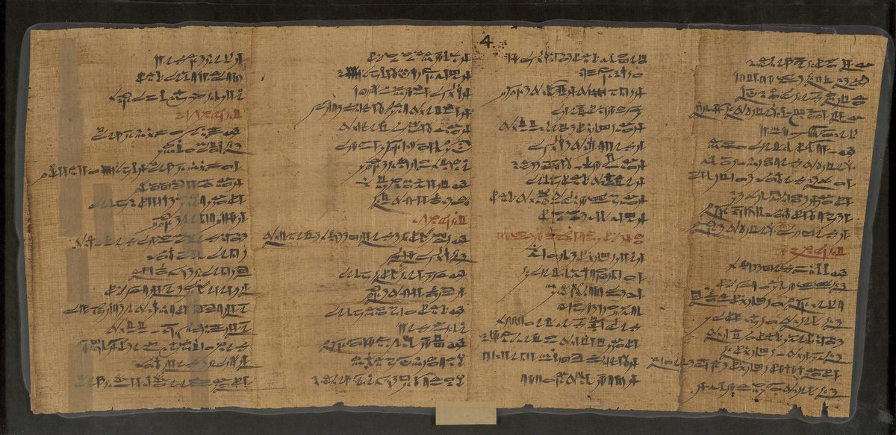

Proverbios 22 — La Traducción Mister

La enseñanza egipcia con la que más a menudo se compara Proverbios 22:17–23:11, en la copia hecha por el escriba Senu, hijo de Pemu, comprada en Tebas para el Museo Británico en 1888. Las líneas rojas son rúbricas, la tinta con que los escribas egipcios marcaban el comienzo de una sección. Aquí no se indica cuáles de sus treinta capítulos contienen estas columnas.

el buen favor antes que la plata y el oro.nota
el hacedor de todos ellos es Jehová.nota
pero los simples pasan de largo y pagan la pena.nota
vienen riquezas y honra y vida.nota
el que guarda su alma se mantiene lejos de ellos.nota
aun cuando envejezca no se apartará de él.nota
y el que toma prestado es siervo del hombre que presta.nota
y la vara de su furor se acabará.nota
porque ha dado de su pan al pobre.nota
y cesan el pleito y la deshonra.nota
el rey es su amigo.nota
pero él tuerce las palabras del traidor.nota
¡En medio de las plazas seré asesinado!».nota
aquel a quien Jehová ha denunciado caerá en ella.nota
la vara de la disciplina la alejará de él.nota
y el que da al rico, solo van a la carencia.nota
y aplica tu corazón a mi conocimiento,nota
si están firmes, todas juntas, sobre tus labios.nota
te las he hecho saber hoy, sí, a ti.nota
de consejo y de conocimiento,nota
para que devuelvas dichos de verdad a quienes te envían?nota
ni aplastes al afligido en la puerta,nota
y despojará de la vida a quienes los despojan.nota
y con el hombre de furores no vayas,nota
y tomes una trampa para tu alma.nota
entre los que salen fiadores de préstamos.nota
¿por qué ha de quitarte la cama de debajo de ti?nota
Notas del traductor — versículo por versículo
Un nombre. «Ha de escogerse un nombre antes que muchas riquezas, el buen favor antes que la plata y el oro»: el hebreo dice solo shem, «un nombre»; la palabra «buen» pertenece a la segunda línea, jen tov, «buen favor». Un nombre es aquí lo que los demás dicen de una persona, lo que Babel intentó agarrar, «hagámonos un nombre» (Génesis 11:4, ya en estas páginas). Nivjar, «ha de escogerse», viene de bajar, escoger, y jen es el favor que Noé «halló a los ojos de Jehová» (Génesis 6:8, ya en estas páginas). La TNM 1987 es la única que deja el nombre solo, «Ha de escogerse un nombre más bien que riquezas abundantes»; la RV60 tiene «De más estima es el buen nombre que las muchas riquezas»; la RV 1909 «la buena fama». El griego, como la RV60, le da adjetivo al nombre, onoma kalon.
El rico y el pobre se encuentran. «El rico y el pobre se encuentran; el hacedor de todos ellos es Jehová»: nifgashu, se encuentran el uno con el otro, en el camino o en el mercado, y ninguno puede fingir que al otro lo hizo otro. Rash, «pobre», es la primera de tres palabras para la pobreza en este capítulo: rash (vv2, 7) y dal (vv9, 16, 22) son ambas «pobre» aquí, y aní (v22) es «el afligido», la palabra del texto escrito en Proverbios 3:34 (ya en estas páginas). La misma pareja vuelve con otro final, «el pobre y el opresor se encuentran; Jehová alumbra los ojos de ambos» (Proverbios 29:13). La RV 1909 tiene «El rico y el pobre se encontraron: A todos ellos hizo Jehová»; la TNM 1987 «El Hacedor de todos ellos es Jehová»; la RV60 «A ambos los hizo Jehová», con el griego, que lee amphoterous, «a ambos».
El sagaz y los simples. «El sagaz ve el mal y se esconde, pero los simples pasan de largo y pagan la pena»: arum, «sagaz», es el adjetivo de la serpiente, la más astuta de los animales del campo (Génesis 3:1, ya en estas páginas), y la raíz de ormá, la «sagacidad» que el capítulo 1 ofrece a los simples (Proverbios 1:4, ya en estas páginas). Aquí esa cualidad mantiene vivo a su dueño: ve venir el problema. Los simples, petaím, siguen andando hacia él, y neenashu, «pagan la pena», es el verbo de una multa: «el responsable será multado» (Éxodo 21:22, ya en estas páginas). El texto escrito tiene va-yisater, leído ve-nistar, «y se esconde». El dicho está en dos versículos de la Biblia hebrea, aquí y casi palabra por palabra en 27:12 (Proverbios 27:12). La RV60 tiene «El avisado ve el mal y se esconde»; la TNM 1987 «Sagaz es el que ha visto la calamidad y procede a ocultarse»; la NVI «el inexperto sigue adelante y sufre las consecuencias».
Pisándole los talones a la humildad. «Pisándole los talones a la humildad, al temor de Jehová, vienen riquezas y honra y vida»: ékev es el talón, y luego lo que viene pisando los talones de algo, como en «a los talones de escuchar ustedes estas ordenanzas» (Deuteronomio 7:12, ya en estas páginas); el nombre de Jacob viene de la misma raíz, el hermano que nació agarrado a un talón (Génesis 25:26, ya en estas páginas). El hebreo pone dos sustantivos uno junto al otro sin «y», anavá, humildad, y yirat YHVH, el temor de Jehová, y las lecturas difieren: o el temor de Jehová es él mismo aquello a lo que lleva la humildad, o los dos forman una pareja cuya recompensa es riquezas, honra y vida. La RV60 los toma como pareja, «Riquezas, honra y vida Son la remuneración de la humildad y del temor de Jehová»; la TNM 1987 también, marcando la palabra que añade, «El resultado de la humildad [y] del temor de Jehová»; la NVI «Recompensa de la humildad y del temor del Señor». Anavá es de la raíz de anav, los humildes a quienes Jehová «da gracia» (3:34); el griego tiene «sabiduría» en su lugar, genea sophias, «la descendencia de la sabiduría». «Riquezas y honra» es lo que la sabiduría tenía en su mano izquierda (3:16).
Espinas y lazos. «Espinas y lazos hay en el camino del torcido; el que guarda su alma se mantiene lejos de ellos»: otra vez dos sustantivos sin «y», tsinim pajim. Iqesh, «torcido», es el retorcido, la palabra del cántico de Moisés, «una generación torcida y perversa» (Deuteronomio 32:5, ya en estas páginas). La RV 1909 tiene «Espinas y lazos hay en el camino del perverso: El que guarda su alma se alejará de ellos»; la TNM 1987 «Espinas [y] trampas hay en el camino del torcido»; la NVI «en la senda de los malvados». El griego tiene «abrojos y lazos en caminos torcidos».
Instruye. «Instruye al muchacho conforme a su camino»: janoj, de janaj, el verbo de una casa nueva y de un templo nuevo. «¿Qué hombre hay que haya edificado casa nueva y no la haya dedicado?» (Deuteronomio 20:5, ya en estas páginas); Salomón y todo Israel «dedicaron la casa de Jehová» (1 Reyes 8:63). El verbo está en cuatro versículos de la Biblia hebrea: Deuteronomio 20:5, 1 Reyes 8:63, su paralelo en 2 Crónicas 7:5, y aquí. Su sustantivo es janucá, la «ofrenda de dedicación del altar» (Números 7:10), la palabra que dio su nombre a la fiesta de Janucá. Así que la instrucción es un comienzo: una vida joven puesta en su primer uso, como se estrena una casa o un altar. La RV60 tiene «Instruye al niño en su camino»; la TNM 1987 «Entrena al muchacho conforme al camino para él»; la RV 1909 «Instruye al niño en su carrera»; la NVI «en el camino correcto».
Su camino. Al pi darkó es «conforme a la boca de su camino», y el hebreo no dice de quién es el camino. Las lecturas difieren. Unos entienden el camino que debe seguir, el correcto, fijado por los padres; así lo hace la NVI con «el camino correcto». Otros leen el camino como el del propio joven, su inclinación o su capacidad, a lo que se acerca el «conforme al camino para él» de la TNM 1987. Y algunos toman el versículo como una advertencia con forma de promesa: déjale a un muchacho su propio camino, y nunca lo dejará. Esta traducción pone «su camino» y deja la pregunta donde la deja el hebreo. Naar, «muchacho», cubre un amplio tramo de edad: José a los diecisiete «era un muchacho» (Génesis 37:2, ya en estas páginas). «Aun cuando envejezca», yazquín, es el verbo del anciano, zaquén.
Un versículo que el griego no tiene. La traducción griega de Proverbios, en la edición de Rahlfs, pasa del versículo 5 directamente al 7; el versículo más citado del capítulo no está en ella. La Douay inglesa, siguiendo el latín, empieza «Es un proverbio: el joven según su camino, aun cuando sea viejo no se apartará de él», sin ningún verbo de instruir. La RV60 tiene «Y aun cuando fuere viejo no se apartará de él».
El que toma prestado y el que presta. «El rico domina a los pobres, y el que toma prestado es siervo del hombre que presta»: lové y malvé son un mismo verbo, lavah, usado para los dos lados del préstamo, de modo que el proverbio está hecho de una sola raíz. El Deuteronomio promete a Israel el lado del que presta, «prestarás a muchas naciones, y tú no tomarás prestado» (Deuteronomio 28:12, ya en estas páginas). Éved, «siervo», es también la palabra para un esclavo. La RV60 tiene «el que toma prestado es siervo del que presta»; la NVI «los deudores son esclavos de sus acreedores»; la TNM 1987 «siervo del hombre que hace el préstamo».
Sembrar y cosechar. «El que siembra injusticia cosechará desgracia, y la vara de su furor se acabará»: avlá, injusticia, es una forma de ável, y aven, desgracia, es también maldad y nada. El «lo que el hombre siembre, eso también cosechará» de Pablo (Gálatas 6:7, ya en estas páginas) tiene el mismo campo. «La vara de su furor» es el shevet con que golpeaba a otros, y se agota. El texto escrito tiene yiqtsor, leído yiqtsar, el mismo verbo. La RV 1909 tiene «El que sembrare iniquidad, iniquidad segará: Y consumiráse la vara de su ira»; la RV60 «la vara de su insolencia se quebrará»; la TNM 1987 «segará lo que es perjudicial».
El que da con alegría. Después de este versículo el griego añade una línea que el hebreo no tiene: andra hilaron kai dotēn eulogei ho theos, «Dios bendice al hombre alegre y dadivoso». El «Dios ama al que da con alegría» de Pablo (2 Corintios 9:7, ya en estas páginas) es esa línea, con «bendice» cambiado por «ama». Rahlfs la imprime como versículo 8a.
El ojo bueno. «El de ojo bueno será bendecido, porque ha dado de su pan al pobre»: tov ayin, «bueno de ojo», está en un solo versículo de la Biblia hebrea. Su contrario, ra ayin, «malo de ojo», es el tacaño de 23:6 y 28:22 (Proverbios 23:6), y la ley advierte contra ese mismo ojo, «y tu ojo sea malo con tu hermano menesteroso y no le des nada» (Deuteronomio 15:9, ya en estas páginas). En hebreo la generosidad es una manera de mirar. La RV60 tiene «El ojo misericordioso será bendito»; la TNM 1987 «El que es bondadoso de ojo será bendecido»; la NVI «El que es generoso será bendecido». La Douay inglesa añade otra línea que está en el griego: «el que hace regalos ganará victoria y honra, pero se lleva las almas de los que los reciben».
Echa fuera al burlador. «Echa fuera al burlador, y sale la contienda, y cesan el pleito y la deshonra»: el lets es el burlador de 1:22 (Proverbios 1:22, ya en estas páginas) y de 3:34, el más difícil de los necios, y cuando se va, la riña se va con él. Din es una causa legal, la palabra de «entre causa y causa» (Deuteronomio 17:8, ya en estas páginas); qalón, «deshonra», es la última palabra de 3:35. El griego pone la escena en un consejo, synedrion: «porque cuando se sienta en el consejo deshonra a todos». La RV60 tiene «Echa fuera al escarnecedor, y saldrá la contienda, Y cesará el pleito y la afrenta»; la TNM 1987 «Echa al burlador, para que se vaya la contienda y para que cesen el litigio y la deshonra».
El amigo del rey. «El que ama la pureza de corazón, con gracia en los labios: el rey es su amigo»: el hebreo encadena tres frases sin unirlas, y cada traducción tiene que decidir cómo se conectan. El texto escrito tiene tehor, leído tehar, «pureza». La RV 1909 tiene «El que ama la limpieza de corazón, Por la gracia de sus labios su amigo será el rey»; la TNM 1987 marca la ruptura con puntos suspensivos, «El que ama la pureza de corazón... por el encanto de sus labios el rey será su compañero». El griego hace del que ama a kyrios, Dios, y añade que los irreprochables le son aceptos.
Él tuerce las palabras. «Los ojos de Jehová custodian el conocimiento, pero él tuerce las palabras del traidor»: va-ysalef divré bogued. Son el verbo y el complemento de la ley contra el soborno, que «tuerce las palabras de los justos» (Éxodo 23:8; Deuteronomio 16:19, ambos ya en estas páginas). «Y tuerce las palabras de» está en tres versículos de la Biblia hebrea, esos dos y este: el soborno tuerce las palabras del justo, y Jehová tuerce las palabras del traidor. Natsar, «custodiar», es el verbo de «los que custodian sus testimonios» (Salmo 119:2, ya en estas páginas). La RV60 tiene «Los ojos de Jehová velan por la ciencia; Mas él trastorna las cosas de los prevaricadores»; la TNM 1987 «pero él subvierte las palabras del traicionero».
Un león afuera. «Dice el perezoso: “¡Hay un león afuera! ¡En medio de las plazas seré asesinado!”»: eratseaj viene de ratsaj, el verbo del mandamiento «No asesinarás» (Éxodo 20:13, impreso allí en el versículo 12, que sigue la numeración hebrea). La palabra es de un crimen, no de un animal; la excusa se imagina al león como un criminal al acecho en la plaza. El perezoso dice casi lo mismo otra vez en 26:13 (Proverbios 26:13). La TNM 1987 tiene «¡En medio de las plazas públicas seré asesinado!»; la RV60 «Seré muerto en la calle»; la NVI «¡En plena calle me matará!».
Una fosa profunda. «Fosa profunda es la boca de las mujeres extrañas; aquel a quien Jehová ha denunciado caerá en ella»: shujá amuqá, «fosa profunda», está en dos versículos de la Biblia hebrea, aquí y en «fosa profunda es la ramera» (Proverbios 23:27). Zarot, «extrañas», es «extraño» en el sentido antiguo de zarah, lo que pertenece a otro, la palabra del «incienso extraño» (Éxodo 30:9, ya en estas páginas). Zeum YHVH viene de za’am, el verbo de Balaam, «¿cómo he de denunciar a quien Jehová no ha denunciado?» (Números 23:8, ya en estas páginas); esta forma está en un solo versículo de la Biblia hebrea. La RV 1909 tiene «Sima profunda es la boca de las extrañas: Aquel contra el cual estuviere Jehová airado, caerá en ella»; la TNM 1987 «El que es denunciado por Jehová caerá en él»; la NVI «La boca de la adúltera». El griego tiene «la boca de un malvado».
La necedad atada al corazón. «La necedad está atada al corazón del muchacho; la vara de la disciplina la alejará de él»: ivelet, «necedad», es el sustantivo del evil, el necio que desprecia «la sabiduría y la disciplina» (1:7, ya en estas páginas). Qeshurá, «atada», es el verbo de 3:3, «átalas a tu cuello»: el padre ata la bondad y la verdad por fuera, y la necedad ya está atada por dentro. Judá usa la misma palabra de su padre y del muchacho Benjamín: «su alma está atada al alma del muchacho» (Génesis 44:30, ya en estas páginas). Musar es «disciplina», como en todo este libro (3:11), y la vara, shevet, es un palo de verdad, la vara de Éxodo 21:20, y también el cetro de un gobernante (Génesis 49:10, ambos ya en estas páginas).
La vara y sus lectores. Este versículo, con 13:24, «el que escatima su vara aborrece a su hijo» (Proverbios 13:24), se ha citado durante siglos para defender que se golpee a los niños. La frase inglesa «spare the rod and spoil the child», «quien escatima la vara malcría al niño», no es un versículo de la Biblia; es del poema Hudibras de Samuel Butler (1663). Los lectores difieren sobre cuán literal es aquí la vara: unos la toman como la instrucción llana que parece ser, y otros como figura de la corrección y la autoridad en general, el sentido que la misma palabra tiene cuando significa cetro. La RV60 tiene «La necedad está ligada en el corazón del muchacho; Mas la vara de la corrección la alejará de él»; la TNM 1987 «la vara de la disciplina es lo que la alejará de él»; la NVI «pero la vara de la disciplina la corrige».
Solo a la carencia. «El que oprime al pobre para acrecentar lo suyo, y el que da al rico, solo van a la carencia»: el hebreo lo, «para él», puede señalar al opresor o al pobre, y el versículo se ha leído de las dos maneras; la mayoría de las traducciones lo hacen dos hombres que acaban en el mismo lugar. La RV60 tiene «El que oprime al pobre para aumentar sus ganancias, O que da al rico, ciertamente se empobrecerá»; la NVI «¡buena manera de empobrecerse!»; la TNM 1987 «de seguro está destinado a la carencia».
Las palabras de los sabios. «Inclina tu oído y oye las palabras de los sabios, y aplica tu corazón a mi conocimiento»: divré jajamim, la frase del comienzo del libro, «las palabras de los sabios y sus enigmas» (1:6, ya en estas páginas). Aquí empieza una nueva colección. Los dichos de los versículos 1–16 pertenecen a la colección encabezada «Los proverbios de Salomón» en 10:1, y ahora un maestro habla con su propia voz, «mi conocimiento», hasta el encabezado «También estos son de los sabios» en 24:23 (Proverbios 24:23). La RV60 tiene «Inclina tu oído y oye las palabras de los sabios, Y aplica tu corazón a mi sabiduría»; la TNM 1987 «para que apliques tu mismísimo corazón a mi conocimiento».
En tu vientre. «Porque es agradable si las guardas en tu vientre, si están firmes, todas juntas, sobre tus labios»: be-vitneja, «en tu vientre», el almacén interior del cuerpo, y luego los labios, donde las palabras salen listas. «Para que tu confianza esté en Jehová, te las he hecho saber hoy, sí, a ti»: la enseñanza tiene un propósito declarado, y es la confianza, mivtaj, del verbo de «Confía en Jehová con todo tu corazón» (3:5). La TNM 1987 tiene «Porque es agradable que las guardes en tu vientre»; la RV 1909 «si las guardares en tus entrañas»; la RV60 «si las guardares dentro de ti».
Cosas nobles, antes, tres veces, o treinta. «¿No te he escrito cosas nobles de consejo y de conocimiento?»: una palabra, y cuatro lecturas. El texto escrito tiene shilshom, «antes», del modismo «ayer y anteayer», como cuando Rut llegó «a un pueblo que no conocías antes» (Rut 2:11, ya en estas páginas). La tradición de lectura tiene shalishim, la palabra para oficiales, «con oficiales sobre todos ellos» (Éxodo 14:7) y «sus capitanes escogidos» (Éxodo 15:4, ambos ya en estas páginas), tomada aquí como cosas «nobles» o «excelentes». El griego tiene trissōs, «tres veces». Y muchas versiones modernas leen las mismas consonantes como sheloshim, «treinta», un cambio de vocales apoyado por el texto egipcio descrito abajo. Esta traducción sigue la tradición de lectura, como en 3:34. La RV 1909 y la RV60 tienen «¿No te he escrito tres veces»; la TNM 1987, con el texto escrito, «¿No te he escrito en tiempos pasados»; la NVI «treinta dichos».
La Instrucción de Amenemope. Desde el estudio de Adolf Erman de 1924, los eruditos comparan la colección que empieza aquí con la Instrucción de Amenemope, una enseñanza egipcia en treinta capítulos que termina, según se traduce comúnmente, «Mira estos treinta capítulos». Los paralelos más cercanos caen dentro de Proverbios 22:17–23:11: oír las palabras y guardarlas dentro (vv17–18), devolver una respuesta al que te envió (v21), no robar al pobre (v22), no andar con el iracundo (v24), no mover los mojones de los campos (v28 y 23:10), y el escriba hábil que está delante de reyes (v29). La mayoría de los eruditos fecha la obra egipcia antes, por la evidencia de sus copias, y las lecturas difieren sobre cuán directamente depende de ella el hebreo. Los paralelos se informan aquí a partir de las traducciones publicadas, no verificados contra el papiro.
Dichos de verdad. «Para hacerte saber la certeza de los dichos de verdad, para que devuelvas dichos de verdad a quienes te envían»: qosht, «certeza», es una palabra rara, cercana al arameo de Daniel, donde el rey dice «Ciertamente su Dios es Dios de dioses» (Daniel 2:47, ya en estas páginas). La imagen es la de un mensajero: al discípulo lo enviarán, y tiene que traer de vuelta un informe verdadero. La RV60 tiene «Para hacerte saber la certidumbre de las palabras de verdad, A fin de que vuelvas a llevar palabras de verdad a los que te enviaron»; la TNM 1987 «para mostrarte la veracidad de los dichos verdaderos».
En la puerta. «No robes al pobre porque es pobre, ni aplastes al afligido en la puerta»: gazal, «robar», es el verbo de la ley, «No oprimirás a tu prójimo, ni le robarás» (Levítico 19:13, ya en estas páginas). «Porque es pobre» nombra la tentación: al pobre se le roba porque no puede impedirlo. La puerta es donde se sentaba el tribunal, donde Booz «subió a la puerta y se sentó allí» para resolver el caso de Rut (Rut 4:1, ya en estas páginas), así que el aplastamiento del que se habla se hace por vía legal. La RV60 tiene «No robes al pobre, porque es pobre, Ni quebrantes en la puerta al afligido»; la TNM 1987 «no aplastes al afligido en la puerta»; la NVI «ni oprimas en los tribunales a los necesitados».
Jehová defiende su causa. «Porque Jehová defenderá la causa de ellos y despojará de la vida a quienes los despojan»: yariv rivam, «defenderá su pleito», de modo que los pobres que perdieron en la puerta ganan un abogado. Qavá, «despojar», es un verbo raro: está en tres versículos de la Biblia hebrea, aquí y dos veces en Malaquías, el versículo que las versiones conocidas traducen «¿Robará el hombre a Dios?» (Malaquías 3:8–9). La RV 1909 tiene «Porque Jehová juzgará la causa de ellos, Y despojará el alma de aquellos que los despojaren»; la TNM 1987 «y ciertamente les robará el alma a los que les roban a ellos»; la NVI «y despojará a quienes los despojen». El griego lee la segunda línea de otra manera, «y librarás tu alma ilesa».
El señor de la ira. «No te hagas amigo del señor de la ira, y con el hombre de furores no vayas, no sea que te acostumbres a sus sendas y tomes una trampa para tu alma»: báal af, «señor de la ira», es el modismo de los hermanos de José, «este señor de los sueños» (Génesis 37:19, ya en estas páginas), un hombre definido por lo que tiene. La frase está en un solo versículo de la Biblia hebrea, y lo mismo ish jemot, «hombre de furores». Teelaf, «acostumbrarse», es el verbo de familiarizarse con algo hasta que se vuelve una segunda naturaleza; la ira se pega como un hábito. El moqesh es una trampa, la palabra de Jueces 2:3. La RV60 tiene «No te entremetas con el iracundo, Ni te acompañes con el hombre de enojos»; la TNM 1987 «para que no te familiarices con sus sendas»; la NVI «y tú mismo caigas en la trampa».
Chocar la mano. «No estés entre los que chocan la mano, entre los que salen fiadores de préstamos»: toqeé jaf, «los que golpean la palma», el apretón de manos que sellaba una garantía, y orvim, de arav, salir fiador, la palabra de Judá para la prenda que dio por Benjamín, «Yo mismo saldré por fiador de él» (Génesis 43:9, ya en estas páginas). La advertencia vuelve en 6:1 y 17:18 (Proverbios 6:1). La RV 1909 tiene «No estés entre los que tocan la mano, Entre los que fían por deudas»; la TNM 1987 «No llegues a estar entre los que chocan las manos, entre los que salen garantes de préstamos».
Tu cama de debajo de ti. «Si no tienes con qué pagar, ¿por qué ha de quitarte la cama de debajo de ti?»: la ley protegía el manto del deudor, porque era también su manta, «¿En qué otra cosa dormirá?» (Éxodo 22:27; compárese Deuteronomio 24:13, ambos ya en estas páginas). El proverbio advierte al fiador que su propia cama no está tan protegida. La RV60 tiene «¿Por qué han de quitar tu cama de debajo de ti?»; la NVI «te quitarán hasta la cama en que duermes»; el griego «tomarán la ropa de cama de debajo de tus costillas».
Un límite antiguo. «No muevas hacia atrás un límite antiguo, que hicieron tus padres»: taseg, «mover hacia atrás», es el verbo de la ley, «No moverás hacia atrás el límite de tu prójimo, el que lindaron los primeros» (Deuteronomio 19:14), y de la maldición, «Maldito el que mueva hacia atrás el límite de su prójimo» (Deuteronomio 27:17, ambos ya en estas páginas). Guevul olam, «un límite antiguo», está en dos versículos de la Biblia hebrea, aquí y en 23:10, que deja fuera «que hicieron tus padres» y añade «no entres en los campos de los huérfanos» (Proverbios 23:10). Donde el Deuteronomio dice «los primeros», el proverbio dice «tus padres»: el mojón es una herencia. Véase guevul. La RV60 tiene «No traspases los linderos antiguos Que pusieron tus padres»; la TNM 1987 «No muevas hacia atrás un lindero de antaño, que tus antepasados han hecho»; la RV 1909 «No traspases el término antiguo».
Hábil en su trabajo. «¿Has visto a un hombre hábil en su trabajo? Delante de reyes se presentará; no se presentará delante de gente oscura»: mahir, «hábil», está en tres versículos de la Biblia hebrea, aquí, Esdras «escriba hábil en la ley de Moisés» (Esdras 7:6), y «la pluma de un escriba hábil» (Salmo 45:2), así que es palabra de escribas. Yityatsev, «presentarse», es apostarse en su lugar, como los asistentes están de pie delante de un rey; jashukim, «gente oscura», es de la raíz de joshej, tinieblas, hombres que se quedan fuera de la vista. La RV60 tiene «¿Has visto hombre solícito en su trabajo? Delante de los reyes estará; No estará delante de los de baja condición»; la TNM 1987 «no se apostará delante de hombres comunes»; la NVI «y nunca será un don nadie».
Patrones que conviene seguir
Donde esta traducción mantiene las palabras exactas y distintas: «un nombre» para shem, sin añadir «buen» (v1); «sagaz» para arum, como 1:4 tiene «sagacidad»; «los simples» para petaím; «el burlador» para lets, como en 1:22 y 3:34; «disciplina» para musar; «necedad» para ivelet; «pobre» para rash y dal y «el afligido» para aní; «mujeres extrañas» para zarot, en el sentido antiguo; «pisándole los talones» para ékev, como en Deuteronomio 7:12; «tuerce» para silef, como en Éxodo 23:8; «salir fiador» para arav, como en Génesis 43:9; «mover hacia atrás» y «límite», como en Deuteronomio 19:14; «señor de la ira», como «señor de los sueños» en Génesis 37:19; y «cosas nobles» para el texto leído shalishim, con las otras lecturas en la nota.
Ecos pagados. El arum de la serpiente y la sagacidad de 1:4; «las palabras de los sabios» de 1:6; los burladores de 1:22 y 3:34; el atar de 3:3; la janucá de Números 7; las leyes del límite de Deuteronomio 19:14 y 27:17; el soborno que tuerce de Éxodo 23:8; la fianza de Judá de Génesis 43:9; el manto en prenda de Éxodo 22:27; el sembrar y cosechar de Gálatas 6:7; y la línea griega detrás de 2 Corintios 9:7.
Ecos sembrados. El segundo límite antiguo (Proverbios 23:10); el dicho del sagaz repetido (Proverbios 27:12); el león otra vez (Proverbios 26:13); la fosa profunda otra vez (Proverbios 23:27); la vara (Proverbios 13:24); qavá en Malaquías 3:8; el escriba hábil de Esdras 7:6; y el final de «las palabras de los sabios» en Proverbios 24:23. Ninguno está todavía en estas páginas.
⚠ Nota sobre el orden: Proverbios está en estas páginas en los capítulos 1, 2, 3, 4, 16, 18, 22 y 31. Lo siguiente en orden es Proverbios 5 — la mujer extraña otra vez, cuyos labios destilan miel, y «bebe el agua de tu propia cisterna».